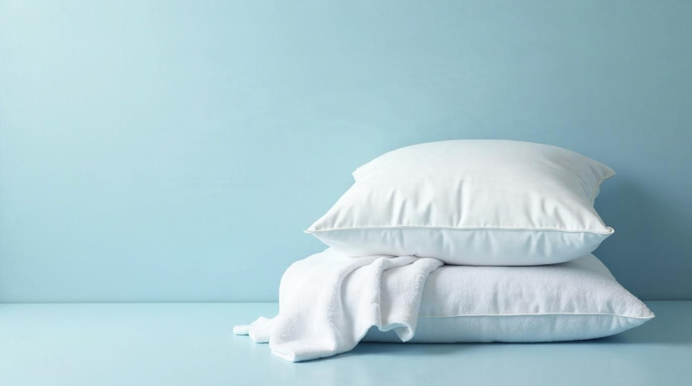

계단을 내려갈 때 무릎이 아프면 통증 부위만이 아니라 어떤 동작에서 얼마나 불편한지를 먼저 묻고, 치료 뒤 달라진 점을 기록해 다음 진료에서 이어서 확인합니다.
여쭙는 것
- 계단을 오를 때와 내려갈 때 중 언제 더 불편하신가요?
- 난간을 꼭 잡으시나요? 몇 층까지는 그냥 내려가실 수 있나요?
- 평지를 걸을 때는 어떤가요?
한의원에서 함께 살필 것
- 오래 앉거나 서 있을 때 허리·목·어깨가 뻣뻣해지는 경우, 자세 습관과 근육의 긴장…
- 움직일 때 관절이 뻑뻑하거나 걸을 때 불편이 생기는 경우, 관절 주변 근육의 균형과…
- 한쪽으로 쏠린 자세나 반복 동작 뒤 통증이 이어지는 경우, 몸의 쏠림과 생활 동작을…
먼저 확인이 필요한 신호
- 넘어지거나 부딪힌 뒤 갑자기 아프고 부은 경우
- 무릎이 붉고 뜨거우며 열이 나는 경우
- 체중을 실을 수 없거나 무릎이 걸리듯 잠기는 경우
"무릎이 아프다"는 말만으로는 알 수 있는 것이 많지 않습니다. 같은 무릎 통증이라도 계단을 오를 때 불편한지, 내려갈 때 불편한지, 평지에서는 괜찮은지에 따라 살펴볼 곳이 달라집니다.
먼저 이렇게 여쭙니다
- 계단을 오를 때와 내려갈 때 중 언제 더 불편하신가요?
- 난간을 꼭 잡으시나요? 몇 층까지는 그냥 내려가실 수 있나요?
- 평지를 걸을 때는 어떤가요?
- 언제부터, 어떤 계기 뒤에 불편해졌나요?
이런 질문은 환자분의 일상 동작을 기준으로 변화를 확인하기 위한 것입니다. "아직 아파요"라는 대답 뒤에 "그래도 한 층은 난간 없이 내려왔어요" 같은 변화가 있을 수 있기 때문입니다.
내려갈 때 더 불편하게 느끼는 경우가 있는 이유
일반적으로 계단을 내려가는 동작은 무릎이 체중을 받으면서 천천히 버텨야 해서 부담이 크게 느껴지는 동작으로 알려져 있습니다. 다만 원인은 사람마다 다르므로 통증 위치, 부기, 과거 부상, 체중과 활동량 등을 함께 살펴봐야 합니다.
한의원 진료는 이렇게 이어집니다
1. 불편한 동작과 통증 부위를 듣고, 주변까지 넓게 살핍니다. 2. 필요하다고 판단될 때 추나, 침, 약침, 체외충격파 등 필요한 방법을 상태에 맞게 이어서 씁니다. 3. 치료 뒤 같은 동작에서 달라진 점을 기록합니다. 4. 다음 진료에서는 "지난번에 한 층까지 난간 없이 내려가셨는데, 요즘은 어떠세요?"처럼 지난 이야기부터 이어서 묻습니다.
반응이 충분하지 않으면 방법을 조정하고, 필요하면 다른 의료기관 진료를 안내합니다.

한의원에서 함께 살필 수 있는 경우
- 오래 앉거나 서 있을 때 허리·목·어깨가 뻣뻣해지는 경우, 자세 습관과 근육의 긴장 상태를 함께 살핍니다.
- 움직일 때 관절이 뻑뻑하거나 걸을 때 불편이 생기는 경우, 관절 주변 근육의 균형과 움직임 범위를 함께 살핍니다.
- 한쪽으로 쏠린 자세나 반복 동작 뒤 통증이 이어지는 경우, 몸의 쏠림과 생활 동작을 함께 살핍니다.
- 날씨나 피로에 따라 통증이 오르내리는 경우, 순환과 긴장, 수면 상태를 함께 살핍니다.
진료실에서 이야기를 들은 뒤 어떤 방법이 맞을지 함께 정합니다.
이런 증상은 먼저 확인이 필요합니다
- 넘어지거나 부딪힌 뒤 갑자기 아프고 부은 경우
- 무릎이 붉고 뜨거우며 열이 나는 경우
- 체중을 실을 수 없거나 무릎이 걸리듯 잠기는 경우
- 쉬어도 밤에 계속 아픈 경우
진료 전에 정리해 오시면 좋은 것
- 언제부터 아팠는지
- 계단에서 불편한 정도 (몇 층까지 괜찮은지, 난간을 잡는지)
- 복용 중인 약과 이전에 받은 검사·진료 기록
자주 묻는 질문
무릎이 아프면 모든 환자가 같은 검사를 받나요?
아니요. 말씀해 주신 증상에 따라 필요하다고 판단될 때만 필요한 방법으로 살핍니다.
한 번 치료받으면 바로 계단이 편해지나요?
변화의 정도와 기간은 사람마다 다릅니다. 치료 뒤 달라진 점을 기록하며 반응에 따라 방법을 조정합니다.
다시 방문하면 처음부터 다시 설명해야 하나요?
아니요. 지난번 상담 내용을 이어서 여쭙니다.
이 글은 일반적인 건강 정보이며 개인의 진단이나 치료를 대신하지 않습니다. 증상이 있거나 복용 중인 약이 있다면 진료를 통해 확인하세요. 치료 효과는 개인마다 다를 수 있습니다.
좋은꿈참사랑한의원 노량진점은 재진 때 지난번 이야기부터 이어서 여쭙니다. 진료시간과 예약은 오시는 길에서 확인하세요.